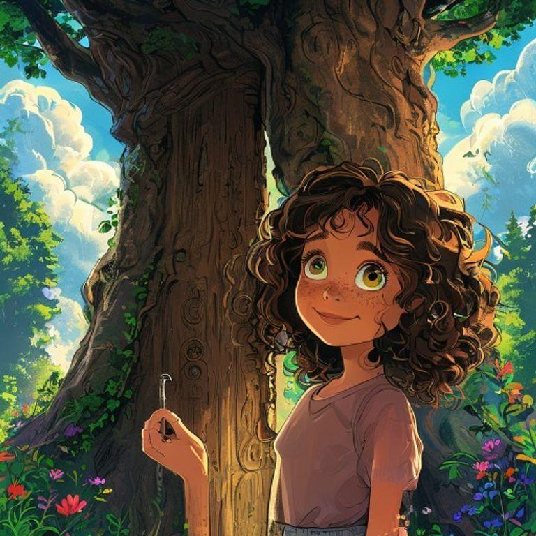
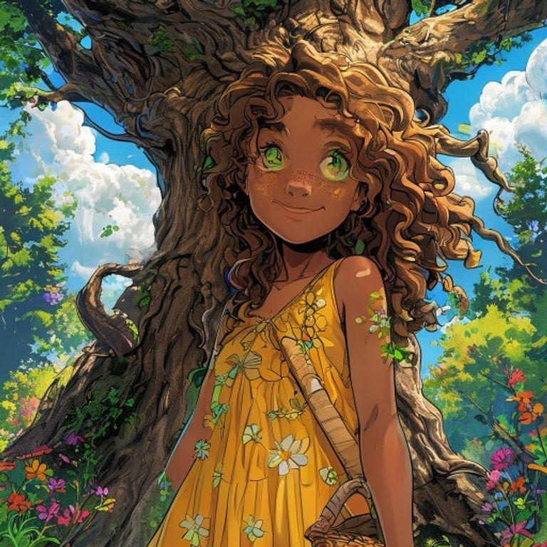
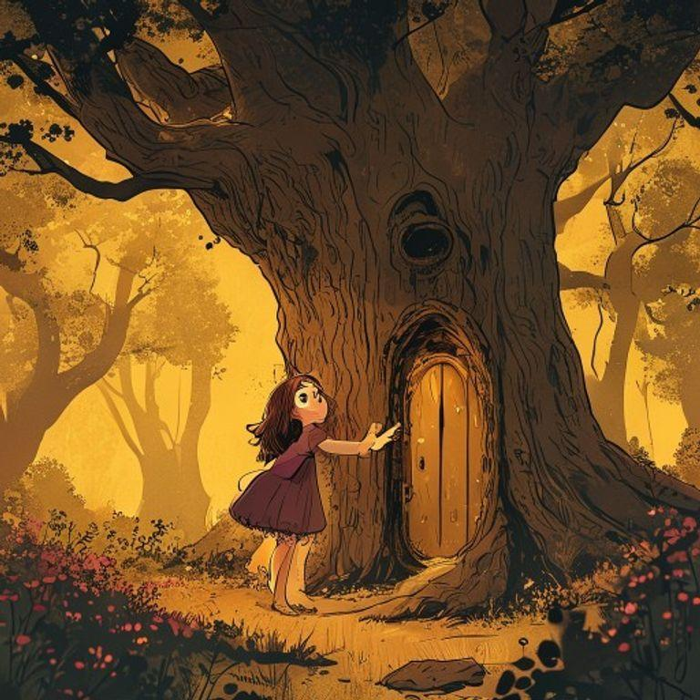
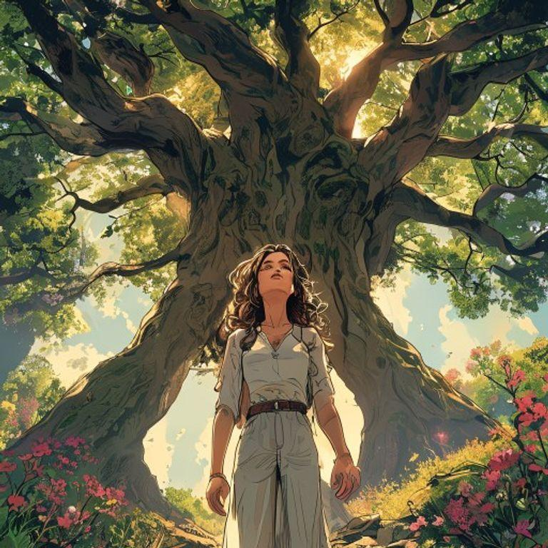
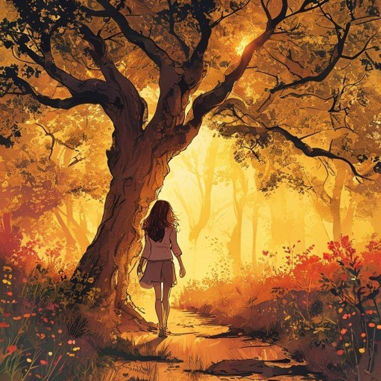
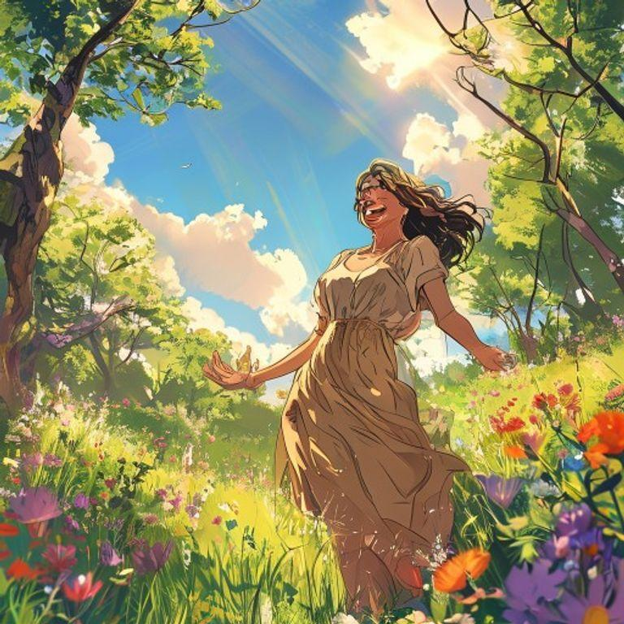

In a small village surrounded by a lush forest, there lived a young girl named Luna. She had curly brown hair, bright green eyes, and a contagious smile. Luna loved to explore and play with her friends, but she had a hard time telling the truth. One day, while playing in the forest, Luna stumbled upon a hidden clearing and found a small, glowing tree with a door at its base.

The tree spoke to Luna in a soft, whispery voice, 'Welcome, young one. I am the Tree of Truth. I have been waiting for you. You have told many lies, and it has weighed heavily on your heart. I can help you find the freedom of telling the truth, but you must first understand the weight of your lies.'
The tree showed Luna a room filled with heavy, gray stones, each one representing a lie she had told. Luna was shocked and saddened by the weight of her lies. She realized that she had hurt her friends and family with her dishonesty. The tree encouraged her to pick up each stone and examine it, to understand the harm it had caused.
As Luna examined each stone, she began to understand the harm her lies had caused. She saw how her friends had felt betrayed and hurt by her dishonesty. She realized that she had been afraid to tell the truth, afraid of being rejected or punished. But with each stone she picked up, she felt a weight lifting off her shoulders.

The tree then showed Luna a beautiful, crystal-clear lake, representing the freedom of telling the truth. Luna was amazed by the lake's clarity and depth. She saw how her honesty could bring her closer to her friends and family, and how it could set her free from the weight of her lies.

Luna returned to her village, determined to tell the truth from then on. She apologized to her friends and family for her past lies, and they forgave her, grateful for her honesty. From that day on, Luna felt a sense of freedom and joy, knowing that she could always tell the truth, no matter how difficult it might be.

The Tree of Truth appeared to Luna once more, its door open, revealing a cozy, glowing interior. 'You have found the freedom of telling the truth, Luna,' it said. 'Remember, honesty is always the best choice, even if it is difficult. You are now a guardian of the truth, and I will always be here to guide you.'
And so, Luna lived happily ever after, always telling the truth, and inspiring those around her to do the same. The Tree of Truth remained a secret, known only to Luna, but its magic lived on, guiding her and others to always choose honesty and integrity.